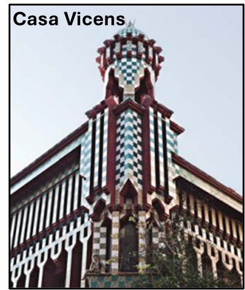
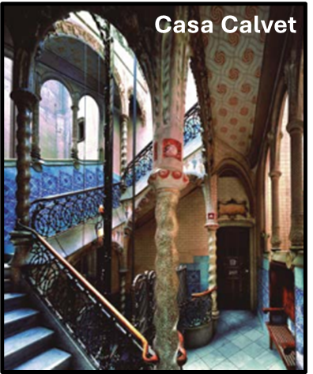
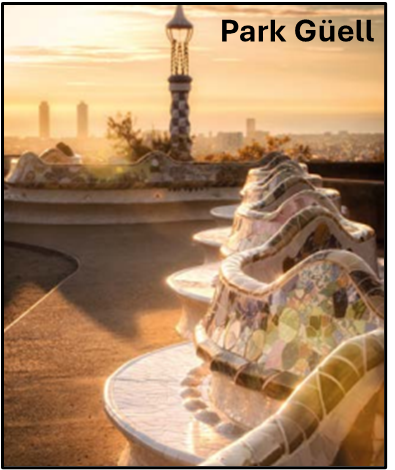
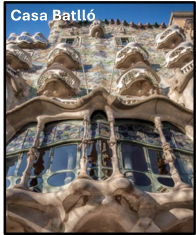
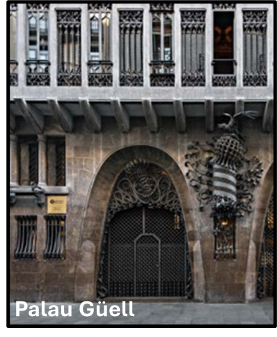
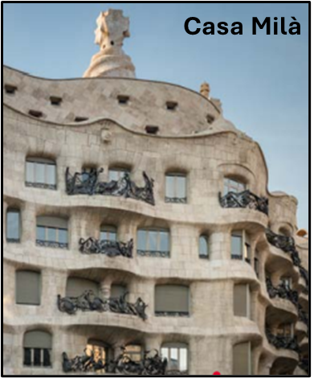

Entramos en el tema
Responde y comenta estas preguntas con tus compañero/as:
- ¿Te interesa la arquitectura?
- ¿Te gusta la arquitectura de Barcelona?
- ¿Conoces el interior de la Sagrada Familia? ¿Te gusta?
- ¿Qué monumentos te gustan más de España?
- En tu opinión, ¿la Sagrada Familia es el monumento más importante de España?
- ¿Cuál es el monumento más importante de tu país? ¿Por qué?

Actividad 1: Vocabulario
Actividad 2: Viaje por la historia


La basílica tiene muchas torres con elementos decorativos. Se puede ver una gran estructura a la izquierda.
El edificio solo tiene una fachada con cuatro torres. Los primeros portales están construidos.
El templo casi está listo, pero tienen que terminar la torre principal, la más alta.
La iglesia ya tiene dos fachadas con muchos detalles, pero la parte central no existe.


Actividad 3: Diferencia de fachadas
Muestra atención en estos elementos:
- Esculturas (formas, escenas, figuras)
- Columnas (aspecto, elementos decorativos)
- Sentimientos expresados
- Relieve (texturas)
Actividad 4: Obras de Gaudí
1
2
3
4
5
6






Reflexión
Comenta estas últimas preguntas con tus compañero/as:
- Después de estas actividades, ¿te interesa más la Sagrada Familia?
- ¿Te interesa aprender léxico relacinado con la arquitectura?
- ¿En qué año piensas que terminarás las construcciones de la SagradaFamilia? ¿Quieres verla completada?
Si tenemos tiempo, podéis investigar los Cuadernos informativos de la página web